| 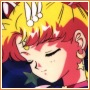 | Serena is the leader of the sailor scouts, but she is not exactly what you’d expect. She’s lazy, carefree, and sort of a ditz. But she’s loyal and true to her mission and her friends. She’ll always be there if they’re in trouble or require help. Serena is also madly in love with (Darien aka Tuxedo Mask). With the help of her locket, she can transform into the superhero known as Sailor Moon and save the world from danger. |
| 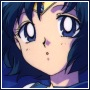 | Amy is the brain of the group. She achieves a 99% average at school. She always has to get the scouts out of trouble and solves all the puzzles they come up against. She is a very loyal friend but she doesn’t really understand the meaning of fun. She also has a mini-computer and a special-scanning visor that allows her to see things you can't see with the naked eye. |
| 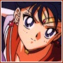 | Raye is the authority of the group. She wants to be leader so Raye and Serena don’t get along that well (they fight constantly). Raye lives at the Cherry Hill temple with her grandpa. When Raye isn’t at school or fighting evil, she’s at the temple, cooking, cleaning or selling good luck charms. Her power comes from the element of fire. She also has an ancient Japanese scroll which can stop evil creatures in their tracks. |
| 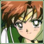 | Lita is tall, strong, tough and a bit of a tomboy. It’s rumored that she was expelled from her old school. She loves to cook and clean. Lita is also known to get constant crushes on guys. Lita is also a great athlete. Her thunder type attacks, stop evil in their tracks. |
| 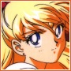 | Mina is one of Serena’s idols. She’s known for her beauty and her role as “Sailor-V,” a TV crime fighter. Personality wise, she’s sort of like Serena, a total klutz, which is why Serena and Mina get along so well. She really wants a boyfriend and is boy-crazy just like Lita. Her attacks usually involve brilliant beams of golden energy. |
| 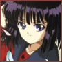 | Sailor Saturn is the guardian of the planet Saturn. She is not very strong and gets tired easily. She gets along with Sailor Mini-Moon the best. She has a strong heart and stays true to her mission. |
| 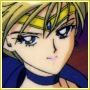 | Sailor Uranus first shows up at the beginning of Sailor Moon S. She is a tomboy and has the appearance of a boy. She is very serious about her mission and her cause. She also possesses the first talisman: the Space Sword. |
| 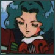 | Sailor Neptune doesn’t appear till the beginning of Sailor Moon S. She always thinks about her actions before she acts. She also has a very calm personality but is true to her cause. Sailor Neptune carries the second talisman: the Deep Aqua Mirror. |
| 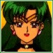 | Sailor Pluto first showed up in Sailor Moon R. She is the oldest of all the sailor scouts. Her mission is to guard the gateway of time. She hardly ever engages in fights with the enemy because she does not want to disrupt the future. She was the one who sent Sailor Mini-Moon to the past. |
| 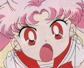 | Rini is the future daughter of Serena and Darien. In Sailor Moon R, Rini goes back into the past to find the Silver Moon Crystal, to try and save Crystal Tokyo and her mother in the future. In Sailor Moon S, Mini-Usa comes back to begin her training as the Sailor Senshi of the future moon. In Sailor Moon SS, Mini-Usa plays a major roll. She is the human that Helios contacts and trusts. |
| 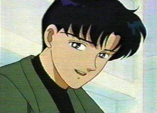 | When Darien was a child, he was in a terrible accident, both his parents were killed and he was left with no memory. After he figured out who he really was, he felt as if a great burden was lifted. Darien is also the prince of the earth. He can transform into Tuxedo Mask and save the day. He always ends up bailing his one true love, Serena, out of trouble. |